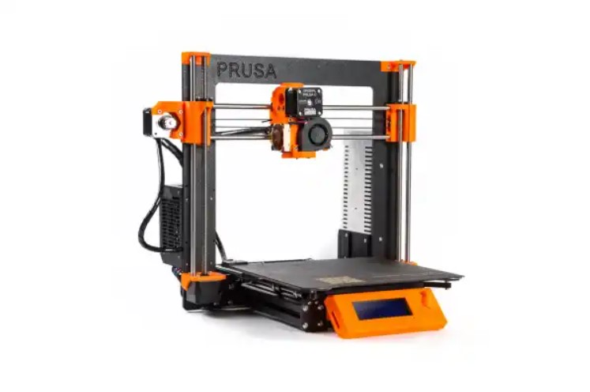

Hópverkefni
Prusa MK3+
Við völdum að mæla Prusa MK3+

Eiginleikar
Prusa MK3+ býr prentar með 0.05mm efnisþykkt þar sem nuzzelið sjálft er 0.04mm og fer yfir x-ásin.
Platan sem efnið er prentað á hreyfis fyrir y-áxin.
Það er þörf á support allstaðar fyrir neðan prentað efni því hvert nýtt lag verður
að vera stutt af því sem er undir því.
Yfirborð gæði Prusa MK3+ er góð, það er mögulegt að velja "smooth", "textured" and "satin". Hjá mér er það slétt og ég myndi segja að yfirborðið er mjög slétt.
Innfyllið er réttar (rectilinear).